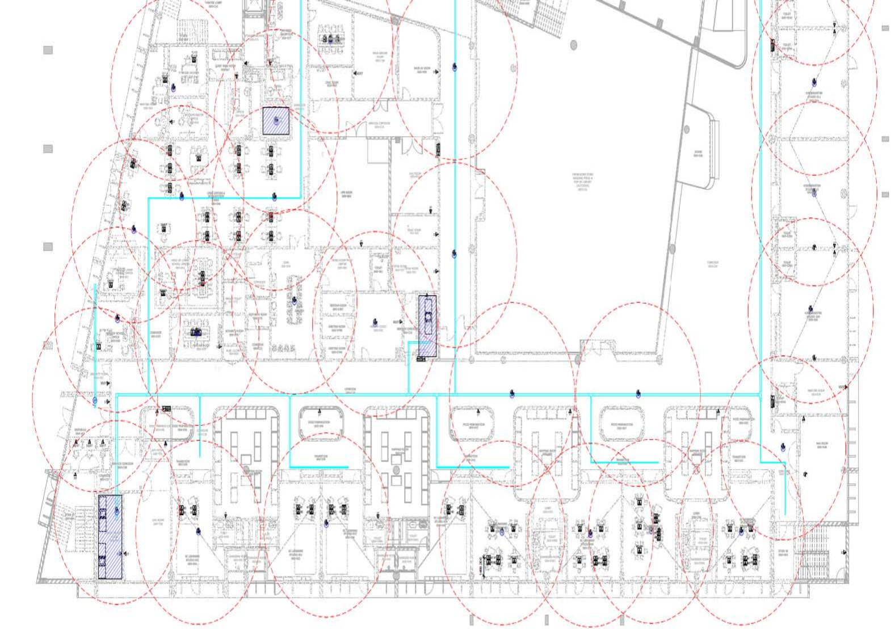
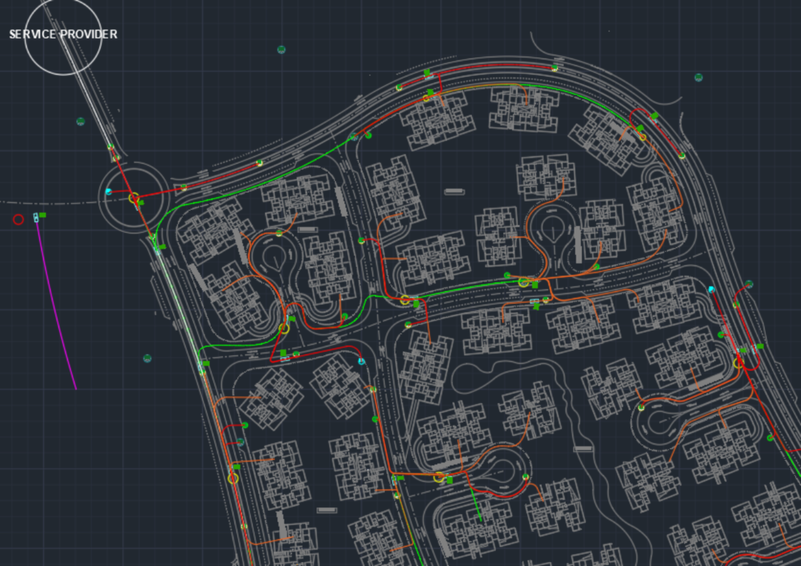
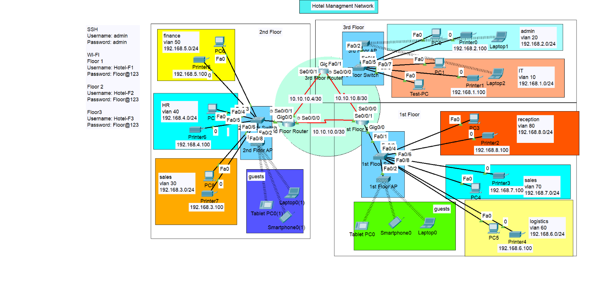

Projects

Smart School Infrastructure Design
We designed a smart school, specifying the locations for data outlets, telecom rooms (MDF and IDF), and structured the network infrastructure.
View Details

Smart City Infrastructure Design
Using AutoCAD, we designed a smart city network integrating fiber optic cables and copper wires for seamless communication and data exchange.
View Details
Smart Bank Network Implementation
This project involved designing and implementing a network for a bank across four floors, focusing on structured cabling, VLANs, DHCP, and switchport security.
View Details

Hotel Network Implementation
We implemented a network infrastructure for a hotel, focusing on VLAN configuration, OSPF routing, DHCP, wireless connectivity, and security.
View Details